Хлеб
от 250 ₽Деревенский, бородинский, тартин, багет на опаре. Выходит из печи днём — можно забронировать.
кафе · лавка · цех
Всё, что лежит на витрине,мы сделали своими руками
Одна дверь — три причины зайти
Завтраки с восьми утра, горячее с двенадцати. Летом выносим веранду, с собакой можно.
Меню ЛавкаХлеб на закваске, хамон, пастрами, брискет, семь сыров и пельмени. Всё домашнее: своё производство и фермеры края.
Витрина ЦехНочью печём, днём коптим и солим. Всё началось именно отсюда — задолго до зала.
ИсторияЯ как будто во Францию вернулся. Круассаны, хрустящий хлеб, jambon cuit, crème brûlée… и всё потрясающе вкусно.
Хоть меню и на одном листке, но это не минус — все блюда отточенные произведения поварского мастерства.
Порции большие. Мясо мясное. Морс наконец-то не приторный, без сахара — морсовый морс.
Очаровательное кафе с лучшими круассанами и крафтовой бакалеей. Дружелюбная атмосфера и приятный дизайн с фото-отсылками к истории города.
Это самое лучшее атмосферное место в городе, рёбра просто пушка. Ценник полностью соответствует кухне.
Отличная кухня, вежливый персонал, шеф — классный мужик. Обстановочка, как сейчас говорят, вайбовая.
Сет на двоих стоил 1600 ₽ — вы посмотрите на это роскошество! Вкусно, сытно, недорого за почти килограмм блюда.
Самые вкусные круассаны в городе. Да и всё остальное всегда прекрасно приготовлено, а персонал создаёт чудесную атмосферу.
Молодое, но уже полюбившееся место. Все детали продуманы, порции большие и сытные, а после можно прогуляться до Волги.
листайте вбок
Хиты витрины
Деревенский, бородинский, тартин, багет на опаре. Выходит из печи днём — можно забронировать.
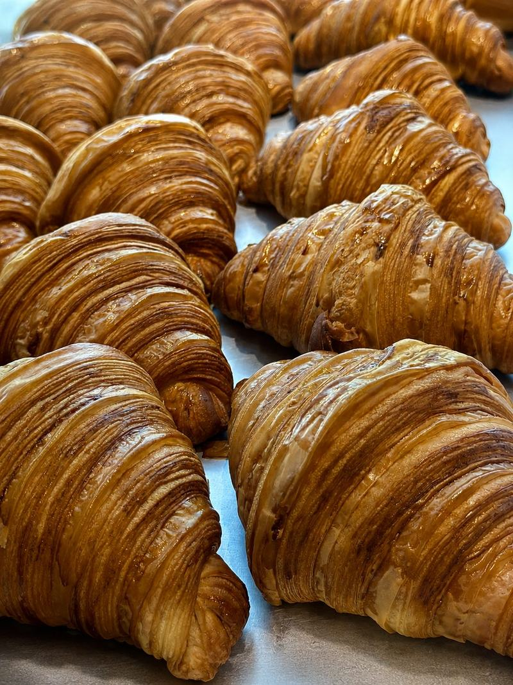
Тридцать два слоя теста. Пекари считали — гости проверяли. Утром берут коробками.
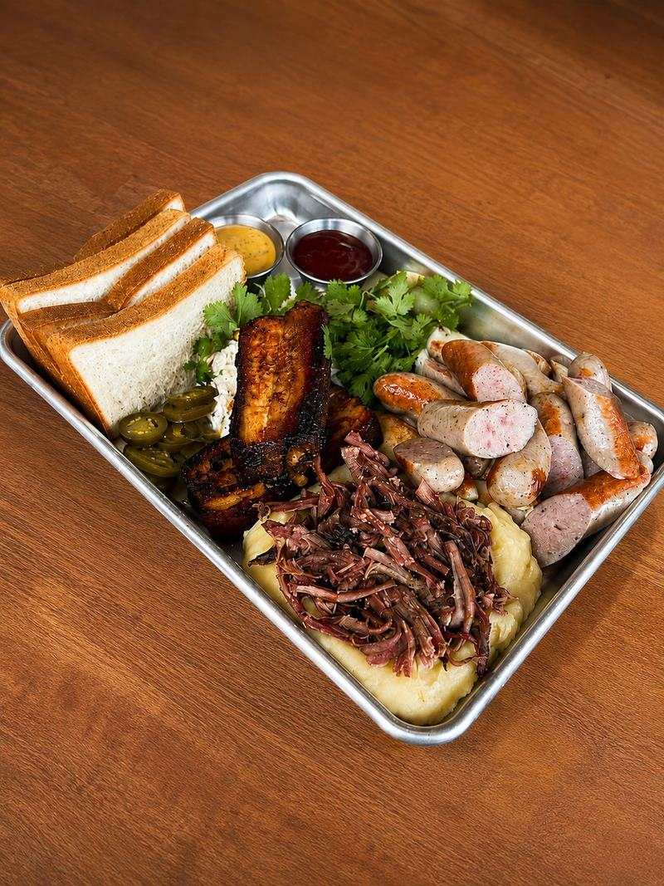
Рваная говядина, рёбра из смокера, колбаски и грудка на одном подносе. 900 г — наедаются вдвоём. Есть XL на компанию.

Хамон, пастрами, брискет, краковская, утка. Всё вялится и коптится у нас — режем при вас, тонко.
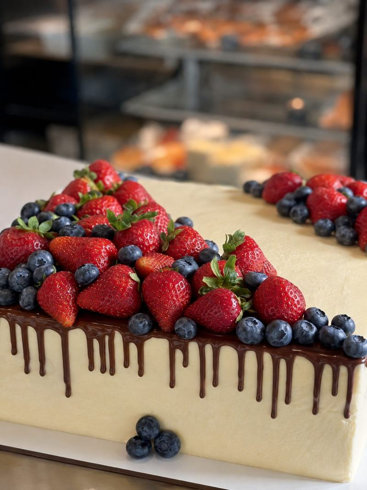
Собираем под событие — от бенто до трёх с половиной килограммов. Заказ по телефону, от суток.
листайте вбок
Выходить не обязательно: мы есть в доставке. Хлеб и деликатесы из лавки можно отложить по телефону.
Как у нас внутри
Небольшой зал, где витрина стоит в центре, а не где-то сбоку: видно, что режут и что кладут на весы. Белая плитка, кирпич, лампы на тросах и длинная деревянная стойка.
На стенах — исторические фотографии Тольятти. А дверь в туалет замаскирована так, что гости замечают её, только когда понадобится, и потом пишут об этом в отзывах.
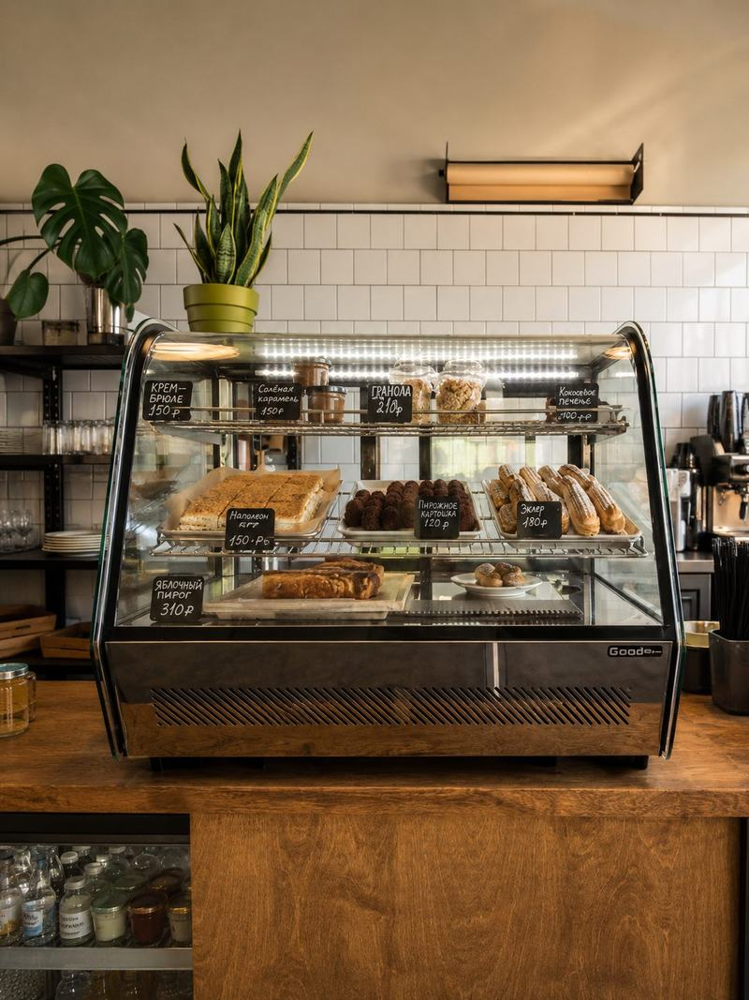
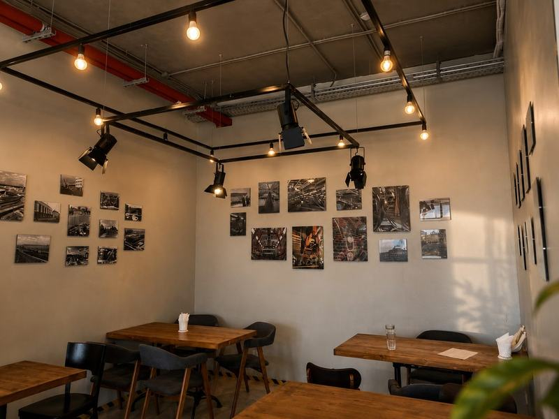
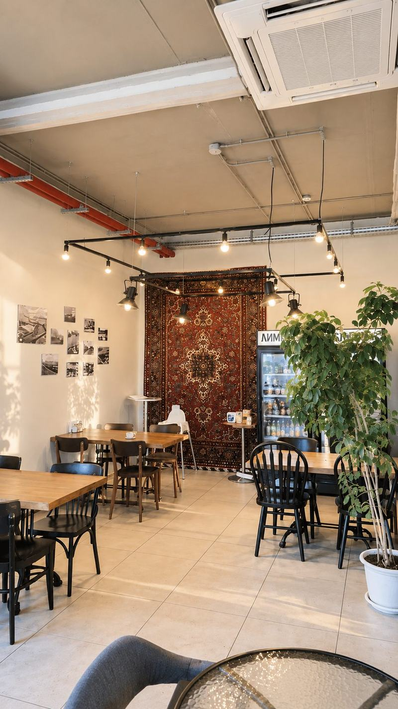
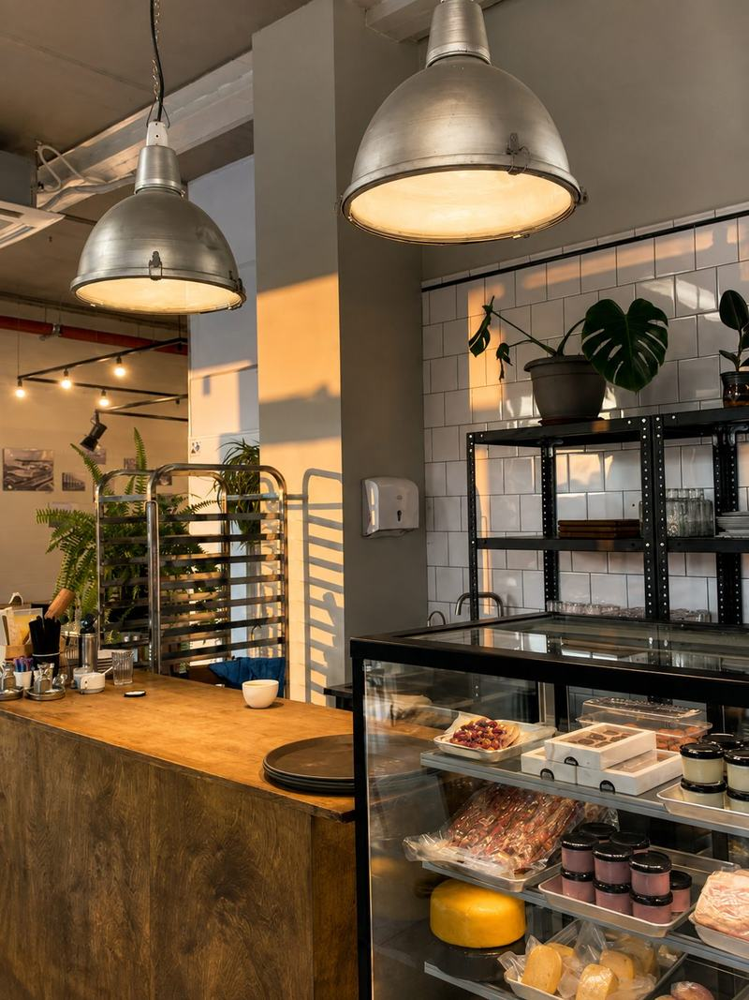
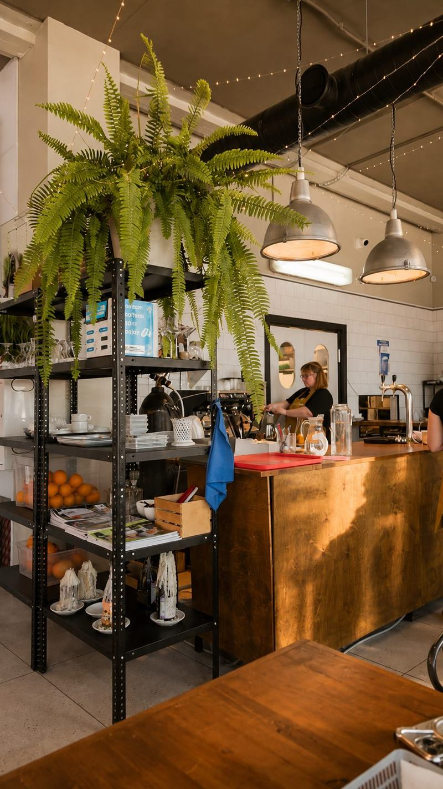
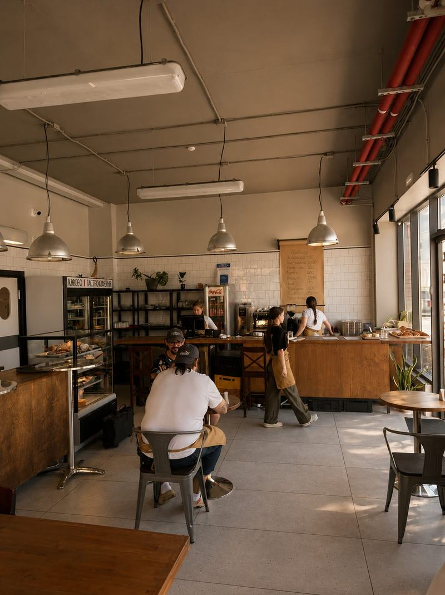
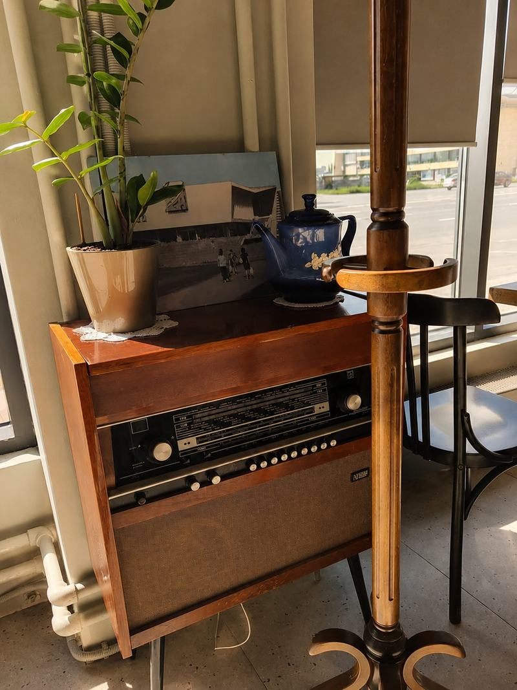

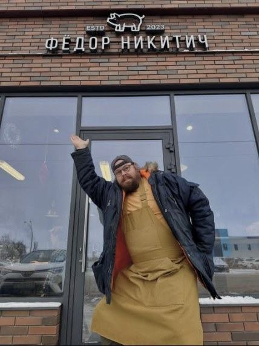
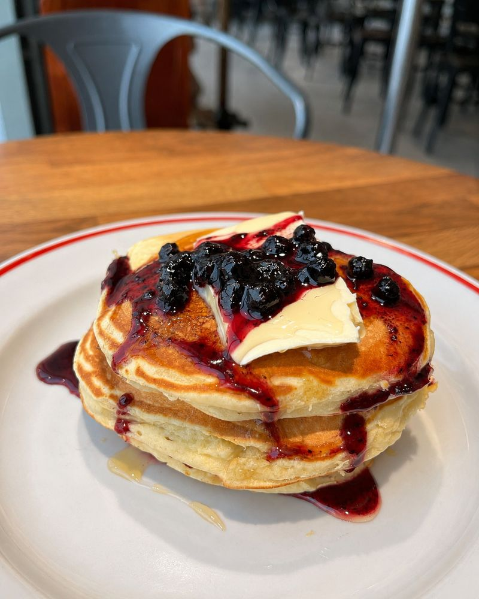
Каждый день с 8:00 до 12:00
Кофе варят с открытия, круассаны к этому моменту ещё тёплые. Оладьи подаём весь день — гости попросили, мы согласились.
Собственное производство
Мы начинали не с зала, а с цеха. Пекли круассаны ночью и на рассвете развозили горячими по кофейням города. Потом несколько месяцев растили закваску — ради одного бородинского.
Зал открылся последним. Поэтому всё, что вам принесут, приготовлено здесь — от хлеба под гренки до окорока в сэндвиче.
Хлеб на закваске · круассаны · бриошь · тартин · багет
Окорок · индейка · брискет · пастрами · краковская · сосиски · утка
Лосось своего посола · паштет из печени · пельмени
Десерты · торты на заказ · бенто
Морсы · лимонады · авторский чай
Кто за этим стоит
Шеф-повар и человек, который сам стоит у печи. Каждое утро выносит противень с круассанами и снимает это на телефон — так родился весь их инстаграм.
А Фёдор Никитич — его сын. Отчество мальчика стало вывеской: получилось имя, которое звучит как старая лавка на углу, где всех знают в лицо.
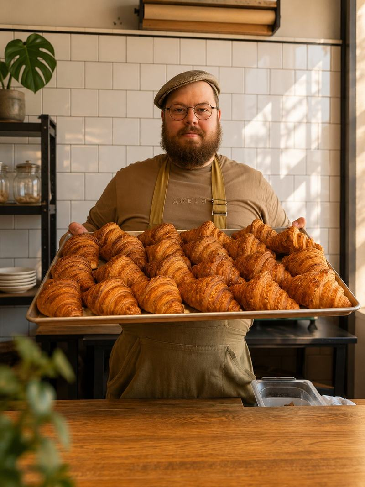
Каждый день в ленте
Свежий хлеб, новинки и стоп-лист публикуют раньше, чем что-либо появляется здесь. Подпишитесь — и будете знать, когда выходит багет.
Как нас найти
Автозаводский район, двести метров от Дворца спорта «Волгарь». От набережной — пешком.
Юбилейная, 85Б · Автозаводский район